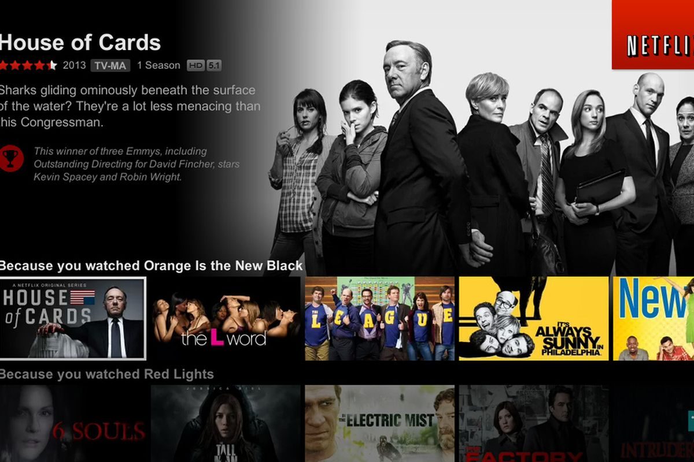

Click Here To Return To Topics
Netflix, of course, is used by multiple people, that being
8.8 million total memberships. Netflix, of course, supplies you with the binge-worthy
television shows and the plethora of movies, but is that the only thing
that keeps users coming back? There must be a reason as to how netflix has
exactly what you are looking for when you log on or even has what you are looking for when you
finish a show and instantly find a new one. Well, I'm going to tell you how Netflix
uses the "terrifying" implementations of A.I. to keep us coming back everyday!
Click Here To Learn More

Yes! A.I. is even used in the
music that you listen to. Pandora is at the top for music environments to
discover new music! If you are a Pandora user like me, you probably wonder
how it is able to play music that you love without you even asking it. Have you
ever just sat and said to yourself, "Man, Pandora really knows how I am feeling
right now!"? Well, there is definitely a reason as to why that is!
Click Here To Learn More
Just like Pandora, Spotify
is doing really well as a music-on-demand streaming platform. With 96 million
premium users at the end of 2018, Spotify's history shows that A.I. has been the way to
go! If you have a Spotify account and wish to learn a lot
more about how you are interacting with A.I. and actually playing a part in Spotify's ongoing success,
as well as how A.I. can understand your music please...
Click Here To Learn More